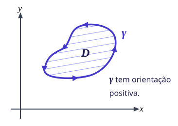
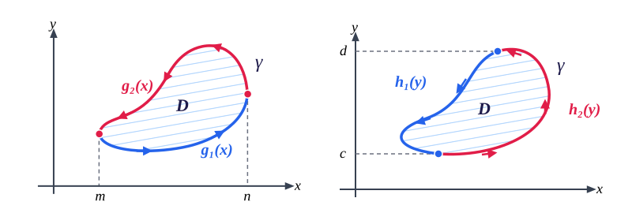
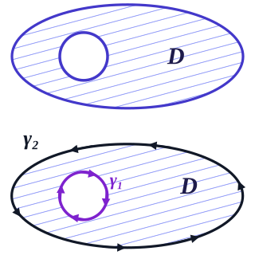
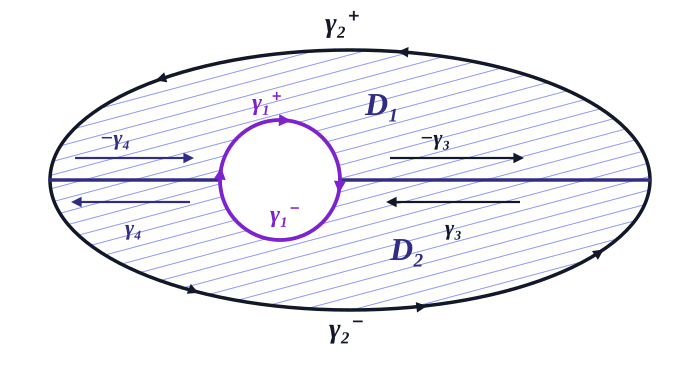
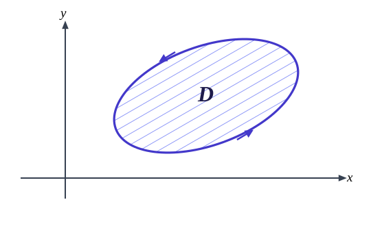

Seja \(\gamma: [a,b] \rightarrow \mathbb{R}^2\) uma curva fechada simples. Diremos que tem orientação positiva quando a região limitada por \(\gamma\) fica à esquerda quando \(\gamma\) é percorrida de \(a\) para \(b\text{.}\)

Figura2.4.2.Curva com orientação positiva
Subseção2.4.1O Teorema de Green
Teorema2.4.3.Teorema de Green.
Seja \(\gamma\) uma curva fechada e simples, de classe \(C^1\) por partes, orientada positivamente, limitando a região \(D\text{.}\) Se \(\vec{F} = P\vec{i} + Q\vec{j}\) é um campo de classe \(C^1\) sobre uma região que contém \(D\text{,}\) então vale:
\begin{equation*}
\oint_{\gamma} \vec{F} \cdot d\vec{r} = \oint_{\gamma} P \, dx + Q \, dy = \iint_{D} \left( \frac{\partial Q}{\partial x} - \frac{\partial P}{\partial y} \right) dA
\end{equation*}
Na definição acima, considere \(\gamma\) de classe \(C^1\) por partes e seja \(\vec{F}: \Omega \subseteq \mathbb{R}^2 \rightarrow \mathbb{R}^2\) de classe \(C^1\) tal que \(D \subset \Omega\text{,}\) sendo \(D\) a região limitada por \(\gamma\text{.}\)
Considere ainda \(D\) uma região simples, isto é, podemos escrever:
\begin{equation*}
D = \{(x,y) \in \mathbb{R}^2 : m \le x \le n \text{ e } g_1(x) \le y \le g_2(x)\}
\end{equation*}
e também:
\begin{equation*}
D = \{(x,y) \in \mathbb{R}^2 : h_1(y) \le x \le h_2(y) \text{ e } c \le y \le d\}
\end{equation*}

Figura2.4.4.Regiões simples do Tipo I e Tipo II
Suponha que \(\vec{F}(x,y) = P(x,y)\vec{i} + Q(x,y)\vec{j}\) e vamos calcular \(\int_{\gamma} P(x,y) \, dx\) observando a região \(D\) dada por \(m \le x \le n\) e \(g_1(x) \le y \le g_2(x)\text{.}\)
Note que \(\gamma = \gamma_1 \cup \gamma_2\) (os trechos verticais não contribuem, pois \(dx = 0\)), em que:
\begin{align*}
\gamma_1(t) \amp = (t, g_1(t)), \quad m \le t \le n\\
\gamma_2(t) \amp = (-t, g_2(-t)), \quad -n \le t \le -m
\end{align*}
Com um pouco de empenho e força de vontade, considerando agora a região como \(D = \{(x,y) \in \mathbb{R}^2 : h_1(y) \le x \le h_2(y) \text{ e } c \le y \le d\}\text{,}\) podemos mostrar com argumentos semelhantes que:
\begin{equation*}
\int_{\gamma} Q(x,y) \, dy = \iint_{D} \frac{\partial}{\partial x} Q(x,y) \, dA
\end{equation*}
O resultado vale para regiões simples como as de cima. Mas, como sei que você é um pensador dos mais habilidosos, você deve estar pensando: "E se \(D\) não for simples?". Bem, meu caro, neste caso podemos, acredite em mim, decompor uma região \(D\) como união finita de regiões simples:
Note que nas fronteiras comuns tem-se \(\int_{C} \vec{F} \cdot d\vec{r} = -\int_{-C} \vec{F} \cdot d\vec{r}\text{.}\)
Nota2.4.6.
Observação: É comum escrever \(\oint_{\gamma} \vec{F} \cdot d\vec{r}\) para indicar que \(\gamma\) é fechada, simples e com orientação positiva.
Exemplo2.4.7.
Calcule \(\int_{\gamma} x^4 \, dx + xy \, dy\) em que \(\gamma\) é o triângulo composto pelos segmentos de reta de \((0,0)\) até \((1,0)\text{,}\) de \((1,0)\) a \((0,1)\) e de \((0,1)\) a \((0,0)\text{.}\)
Calcule \(\int_{C} e^x \sin y \, dx + (e^x \cos y + x) \, dy\text{,}\) onde \(C\) é o arco do círculo \(x^2 + y^2 = 1\text{,}\) orientado no sentido anti-horário e no 1º quadrante.
Podemos usar o Teorema de Green na região \(D\) delimitada por \(C\text{,}\)\(\gamma_1\) e \(\gamma_2\text{,}\) onde \(\gamma_1\) é o segmento vertical e \(\gamma_2\) o segmento horizontal.
Aqui, \(P(x,y) = e^x \sin y \implies \frac{\partial P}{\partial y} = e^x \cos y\text{.}\)\(Q(x,y) = e^x \cos y + x \implies \frac{\partial Q}{\partial x} = e^x \cos y + 1\text{.}\)
Pelo Teorema de Green, \(\iint_D \left(\frac{\partial Q}{\partial x} - \frac{\partial P}{\partial y}\right) dA = \int_{C \cup \gamma_1 \cup \gamma_2} \vec{F} \cdot d\vec{r}\text{.}\)
Calcule \(\oint_{C} (x^2 - y^2) \, dx + (x^3 + y^2 + x^2) \, dy\text{,}\) onde \(C\) é a curva orientada no sentido anti-horário e que limita uma região \(D\) entre as retas \(y = \frac{\sqrt{3}}{3}x\) e \(y = \sqrt{3}x\) e entre os círculos \(x^2 + y^2 = 1\) e \(x^2 + y^2 = 4\) no primeiro quadrante.
Subseção2.4.2Regiões com Furos (Multiplamente Conexas)
O teorema de Green pode ser aplicado em regiões com furos para o campo \(\vec{F}\) com finitos pontos de descontinuidades. Considere uma região com um buraco interno.

Figura2.4.11.Região com furo dividida em sub-regiões
Podemos ver que uma curva para limitar \(D\) e ser orientada positivamente será \(C = \gamma_1 \cup \gamma_2\text{,}\) em que \(\gamma_1\) é percorrida no sentido anti-horário e \(\gamma_2\) é percorrida no sentido horário (desta forma a região \(D\) estará sempre à esquerda).
Agora, dividimos \(D\) em regiões sem buracos \(D_1\) e \(D_2\) limitadas por curvas orientadas positivamente.

Figura2.4.12.Subdivisão da região com furo em sub-regiões \(D_1\) e \(D_2\) com cancelamento nos cortes \(\gamma_3\) e \(\gamma_4\) Teremos:
Note acima que as integrais sobre as curvas internas se cancelam: \(\int_{-\gamma_4} \vec{F} \cdot d\vec{r} = -\int_{\gamma_4} \vec{F} \cdot d\vec{r}\) e \(\int_{-\gamma_3} \vec{F} \cdot d\vec{r} = -\int_{\gamma_3} \vec{F} \cdot d\vec{r}\text{.}\) Portanto ainda vale:
Calcule a integral de linha do Campo Vetorial \(\vec{F}(x,y) = \left( \frac{-y}{x^2+y^2}, \frac{x}{x^2+y^2} + 2x \right)\) ao longo da curva \(C\) de equação \(\frac{x^2}{4} + \frac{y^2}{9} = 1\text{,}\) orientada no sentido anti-horário.
Note que o Teorema de Green não pode ser aplicado diretamente, pois \(\vec{F}\) não é \(C^1\) na origem. Mas considere um círculo \(C_2\) de raio \(\epsilon > 0\) e orientado no sentido horário. Assim, \(\gamma = C \cup C_2\) limitam positivamente uma região \(D\text{.}\)
Pelo Teorema de Green nesta região \(D\) e pelo que vimos acima:
Segue que a diferença é exatamente \(2\text{,}\) logo:
\begin{equation*}
\iint_{D} \left( \frac{\partial Q}{\partial x} - \frac{\partial P}{\partial y} \right) dA = \iint_{D} 2 \, dA = 2A(D)
\end{equation*}
A área de \(D\) é a área da elipse retirando a área do círculo \(C_2\text{:}\)\(A(D) = 6\pi - \pi\epsilon^2\text{.}\)(Nota: no equacionamento da integral dupla, multiplicaremos essa área por 2).
A curva \(C_2\) (sentido horário) pode ser parametrizada por:
Como \(\epsilon > 0\) pode ser arbitrariamente pequeno (isto é, $\epsilon \to 0$), podemos concluir que a circulação ao longo da elipse é perfeitamente contornável pelo limite.
Subseção2.4.3Cálculo de Áreas com o Teorema de Green
O Teorema de Green nos ajuda ainda a calcular áreas. Note que se \(\left(\frac{\partial Q}{\partial x} - \frac{\partial P}{\partial y}\right) = 1\text{,}\) então:
\begin{equation*}
\oint_{C} P(x,y) \, dx + Q(x,y) \, dy = \iint_{D} 1 \, dA = A(D)
\end{equation*}

Figura2.4.14.Região \(D\) no plano cartesiano com fronteira percorrida no sentido positivo
Temos algumas opções para obter \(\frac{\partial Q}{\partial x} - \frac{\partial P}{\partial y} = 1\text{:}\)
\(P(x,y) = 0\) e \(Q(x,y) = x \implies \oint_C x \, dy = A(D)\)
\(Q(x,y) = 0\) e \(P(x,y) = -y \implies -\oint_C y \, dx = A(D)\)
De forma que \(2A(D) = \oint_C x \, dy - \oint_C y \, dx\text{.}\) Ou seja:
\begin{equation*}
A(D) = \frac{1}{2} \oint_{C} -y \, dx + x \, dy
\end{equation*}
(Aqui, \(P(x,y) = \frac{-y}{2}\) e \(Q(x,y) = \frac{x}{2}\)).
Exemplo2.4.15.
Encontre a área da elipse \(E: \frac{x^2}{4} + \frac{y^2}{9} = 1\text{.}\)
\(\oint_C (2x - y^3) \, dx - xy \, dy\text{;}\)\(C\) delimita o anel entre \(x^2 + y^2 = 4\) e \(x^2 + y^2 = 9\text{.}\)
\(\oint_C (2x - y) \, dx + (x + 3y) \, dy\text{;}\)\(C\) é a fronteira do pentágono de vértices \((0,0)\text{,}\)\((0,2)\text{,}\)\((1,3)\text{,}\)\((2,2)\) e \((2,0)\text{.}\)
Demonstração via Teorema de Green: sendo \(P(x,y) = a_1 x + a_2 y + a_3\) e \(Q(x,y) = b_1 x + b_2 y + b_3\text{,}\) temos \(\frac{\partial Q}{\partial x} - \frac{\partial P}{\partial y} = b_1 - a_2\text{.}\) Assim:
Mostre que \(\text{área}(D) = \oint_{\partial D} x \, dy\text{.}\)
Use o item (a) para calcular a área da região limitada pelo eixo \(y\text{,}\) pelas retas \(y = 1\text{,}\)\(y = 3\text{,}\) e pela curva \(x = y^2\text{.}\)
Determine \(\oint_C (x^2 + y + 2xy^3)\,dx + (5x + 3x^2y^2 + y)\,dy\text{,}\) onde \(C\) é a união de \(C_1: x^2 + y^2 = 1\) (\(y \ge 0\)), \(C_2: x + y + 1 = 0\) (\(-1 \le x \le 0\)) e \(C_3: x - y - 1 = 0\) (\(0 \le x \le 1\)) orientada no sentido anti-horário.
Seja \(\vec{F} = (F_1, F_2)\) de classe \(C^1\) em \(\mathbb{R}^2 \setminus \{(0,0)\}\) tal que \(\frac{\partial F_2}{\partial x} = \frac{\partial F_1}{\partial y} + 4\text{.}\) Sabendo que \(\oint_\gamma F_1\,dx + F_2\,dy = 6\pi\) na circunferência unitária \(\gamma\text{,}\) calcule a integral ao longo da elipse \(C: \frac{x^2}{4} + \frac{y^2}{25} = 1\) orientada no sentido anti-horário.
Seja \(\vec{F}(x,y) = \left( \frac{-y}{x^2+y^2}, \frac{x}{x^2+y^2} + 3x \right)\) em \(\mathbb{R}^2 \setminus \{(0,0)\}\text{.}\) Calcule a integral de linha no sentido anti-horário ao longo de: